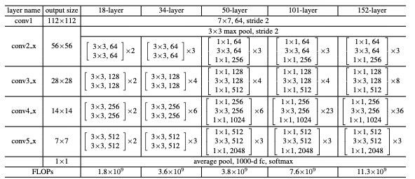
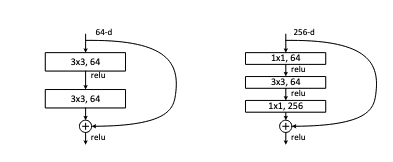
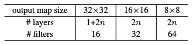

Increase in layers in NNs causes vanishing/exploding gradient problems (think of chain rule, more multiplications of the partial derivatives can lead to very small gradients being updated or very large gradients). The authors finds thats deeper networks have higher training-error that is not caused by overfitting, also known as the degrading problem.
Given being the desired mapping/output of network, instead of trying to learn directly, we instead learn where the term is referred to identity mapping. The intuition behind this is deeper networks should perform equally or better than shallower networks, and in the extreme case where adding more layers has no effect, the added layers should form a identity mapping of . However, in practice, this is not true. It is shown that solvers may struggle learning identity mappings if there are too many layers.
For example, without using residual connections, if we use as our non-linear activation function, and if the output of this function is 0 then at that layer , meaning that the identity of this layer is lost. Using can help push the non-linear layer to 0 and allow the term to retain the identity mappings.
Formally, the resnet blocks are defined as : , where has the same dimension as . If not, the paper performs a linear projection to match the dimensions.
class LinearProjection(nn.Module):
"""
projects W_x * x
Normally, stride should be 1 but 2 when it goes across different feature map dimensions.
"""
def __init__(self, in_channel, out_channel, stride):
super().__init__()
# This is where we do the linear projection W_x * x using conv.
self.conv = nn.Conv2d(
in_channels=in_channel,
out_channels=out_channel,
kernel_size=1,
stride=stride,
)
# Always batch norm after each conv.
self.bn = nn.BatchNorm2d(out_channel)
def forward(self, x):
"""forward pass for linear projection for identify mapping"""
return self.bn(self.conv(x))

"""
Building blocks for ResNet-34
Conv -> BN -> Conv -> BN -> + residual
"""
def __init__(self, in_channel, out_channel, stride):
super().__init__()
self.conv1 = nn.Conv2d(
in_channels=in_channel,
out_channels=out_channel,
kernel_size=3,
stride=stride,
padding=1,
)
self.bn1 = nn.BatchNorm2d(out_channel)
self.act1 = nn.ReLU()
self.conv2 = nn.Conv2d(
in_channels=out_channel,
out_channels=out_channel,
kernel_size=3,
stride=1,
padding=1,
)
self.bn2 = nn.BatchNorm2d(out_channel)
if in_channel != out_channel:
self.skipconnection = LinearProjection(
in_channel=in_channel, out_channel=out_channel, stride=stride
)
else:
self.skipconnection = nn.Identity()
self.act2 = nn.ReLU()
def forward(self, x):
"""
forward function
"""
skipconnection = self.skipconnection(x)
x = self.act1(self.bn1(self.conv1(x)))
x = self.bn2(self.conv2(x))
return self.act2(x + skipconnection)
class ResNet34(nn.Module):
"""
- num_blocks=[3, 4, 6, 3], num_channels=[64, 128, 256, 512])
# first conv layer for Resnet34 -> takes (3,224,224) -> 7x7 convolution with 64 channels
# output should be (64, 112, 112);
# for convolution, out_size = floor{(Input - Kernel_Size + 2 * Padding) / Stride} + 1
# in this case --> 112 = floor{(224 - 7 + 2*Padding) / 2} + 1
# in this case --> 111 = floor{(224 - 7 + 2*Padding) / 2}
# in this case --> 111 <= (224 - 7 + 2*Padding)/2 < 112
# in this case --> 222 <= (217 + 2*Padding) < 224
# in this case --> 5 <= (2*Padding) < 7
# in this case --> 2.5 <= (Padding) < 3.5
# in this case --> Padding = 3
"""
def __init__(self, num_blocks, num_channels):
super().__init__()
self.conv1 = nn.Sequential(
nn.Conv2d(3, 64, kernel_size=7, stride=2, padding=3, bias=False),
nn.BatchNorm2d(64),
nn.ReLU(inplace=True),
# techincally, max pooling is part of conv2_x
nn.MaxPool2d(kernel_size=3, stride=2, padding=1),
)
self.in_channels = 64
layers = []
for i, _ in enumerate(num_blocks):
stride = (
1 if i == 0 else 2
) # for conv2_x, no need to have stride 2 as maxpooling already reduces dim
layers.append(
self._make_layers(ResidualBlock, num_channels[i], num_blocks[i], stride)
)
self.body = nn.Sequential(*layers)
self.avgpool = nn.AvgPool2d((1, 1))
# image classification with 1000 different types of classes
self.fc = nn.Linear(num_channels[-1], 1000)
def _make_layers(self, block, out_channels, num_blocks, stride):
layers = []
# first block connects prev. channel dim to current channel dimm
layers.append(block(self.in_channels, out_channels, stride))
self.in_channels = out_channels
# remaining has same channel dims
for _ in range(1, num_blocks):
layers.append(block(out_channels, out_channels, stride=1))
return nn.Sequential(*layers)
def forward(self, x):
"""
Docstring for forward
"""
x = self.conv1(x)
x = self.body(x)
x = self.avgpool(x)
x = torch.flatten(x, 1)
x = self.fc(x)
return x

class BottleNeckBlock(nn.Module):
"""
Docstring for BottleNeckBlock
"""
def __init__(self, in_channels, bottleneck_channels, out_channels, stride):
super().__init__()
self.conv1 = nn.Conv2d(
in_channels=in_channels,
out_channels=bottleneck_channels,
stride=1,
kernel_size=1,
)
self.bn1 = nn.BatchNorm2d(in_channels)
self.conv2 = nn.Conv2d(
in_channels=bottleneck_channels,
out_channels=bottleneck_channels,
stride=stride,
kernel_size=3,
)
self.bn2 = nn.BatchNorm2d(bottleneck_channels)
self.conv3 = nn.Conv2d(
in_channels=bottleneck_channels,
out_channels=out_channels,
stride=1,
kernel_size=1,
)
self.bn3 = nn.BatchNorm2d(out_channels)
if in_channels != out_channels:
self.skipconnection = LinearProjection(
in_channel=in_channels, out_channel=out_channels, stride=stride
)
else:
self.skipconnection = nn.Identity()
self.act1 = nn.ReLU()
self.act2 = nn.ReLU()
self.act3 = nn.ReLU()
def forward(self, x):
"""
Docstring for forward
:param self: Description
"""
skipconnection = self.skipconnection(x)
x = self.act1(self.bn1(self.conv1(x)))
x = self.act2(self.bn2(self.conv2(x)))
return self.act3(skipconnection + self.bn3(self.conv3(x)))
lass ResNetCifar10(nn.Module):
"""
Docstring for Cifar10
- input: (3,32,32)
- for convolution, out_size = floor{(Input - Kernel_Size + 2 * Padding) / Stride} + 1
"""
def __init__(self, num_blocks, num_channels):
super().__init__()
# want to preserve dim size of (32,32)
# 32 = floor{(32 - 3 + 2*Padding) / Stride} + 1
# 31 <= (29 + 2*Padding) < 32
# 2 <= 2*Padding < 3
# Padding = 1
self.conv1 = nn.Conv2d(
in_channels=3, out_channels=64, kernel_size=3, stride=1, padding=1
)
self.bn1 = nn.BatchNorm2d(64)
self.act1 = nn.ReLU()
self.in_channels = 64
layers = []
for i, _ in enumerate(num_blocks):
stride = (
1 if i == 0 else 2
) # for conv2_x, no need to have stride 2 as maxpooling already reduces dim
layers.append(
self._make_layers(ResidualBlock, num_channels[i], num_blocks[i], stride)
)
self.blocks = nn.Sequential(*layers)
self.avgpool = nn.AdaptiveAvgPool2d((1, 1))
self.fc = nn.Linear(num_channels[-1], 10)
def _make_layers(self, block, out_channels, num_blocks, stride):
layers = []
# first block connects prev. channel dim to current channel dimm
layers.append(block(self.in_channels, out_channels, stride))
self.in_channels = out_channels
# remaining has same channel dims
for _ in range(1, num_blocks):
layers.append(block(out_channels, out_channels, stride=1))
return nn.Sequential(*layers)
def forward(self, x):
"""
Docstring for forward
"""
x = self.conv1(x)
x = self.blocks(x)
x = self.avgpool(x)
x = torch.flatten(x, 1)
x = self.fc(x)
return x

num_layers = [1 + 2 * config.N, 2 * config.N, 2 * config.N]weight_decay": 1e-4, momentum=0.9"batch_size": 128optim.lr_scheduler.MultiStepLR( optimizer, milestones=[77, 103], gamma=0.1 ) to specify leraning rates.transforms.RandomCrop(32, padding=4), transforms.RandomHorizontalFlip(), transforms.ToTensor(), transforms.Normalize((0.4914, 0.4822, 0.4465), (0.2023, 0.1994, 0.2010)),